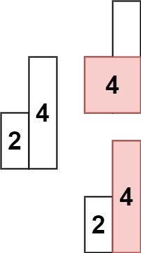

84. 柱状图中最大的矩形
单调递增栈：来了更矮的柱子就把栈里更高的依次弹出结算——高 × (右边界 i − 左边界 − 1)；末尾用 0 哨兵清空栈。
思路
- 每根柱子当「矩形高」时能撑到的宽度 = 右边第一个更矮的位置 − 左边第一个更矮的位置 − 1。
- 栈存下标、高度从底到顶严格递增；当前柱更矮时，栈顶的「右边第一个更矮」就是当前柱，弹出后新栈顶就是「左边第一个更矮」，宽一步算出。
i == n时补高度 0 的右哨兵把栈清空；栈空时左边界记-1。- 高度相等不弹（用
h < heights[栈顶]判断），同高的柱子由最后弹出的那根拿到完整宽度，答案不受影响。
图解
最优解
1class Solution {2 public int largestRectangleArea(int[] heights) {3 // 栈里放下标：从栈底到栈顶对应的高度严格递增4 int[] stack = new int[heights.length + 1];5 int top = -1, ans = 0;6 // i == n 时用高度 0 当右哨兵，把栈里剩下的柱子全部清算掉7 for (int i = 0; i <= heights.length; i++) {8 int h = i == heights.length ? 0 : heights[i];9 // 来了更矮的：栈顶柱子的左右边界都确定了，弹栈结算它的矩形10 while (top >= 0 && h < heights[stack[top]]) {11 int height = heights[stack[top--]];12 // 左边界 = 新栈顶（左边第一个更矮的），右边界 = i（右边第一个更矮的）13 int left = top < 0 ? -1 : stack[top];14 ans = Math.max(ans, height * (i - left - 1));15 }16 stack[++top] = i;17 }18 return ans;19 }20}题目
给定 n 个非负整数，用来表示柱状图中各个柱子的高度。每个柱子彼此相邻，且宽度为 1 。
求在该柱状图中，能够勾勒出来的矩形的最大面积。
示例 1:

输入：heights = [2,1,5,6,2,3] 输出：10 解释：最大的矩形为图中红色区域，面积为 10
示例 2：

输入： heights = [2,4] 输出： 4
提示：
1 <= heights.length <=1050 <= heights[i] <= 104
题面取自力扣当前版本。
数据快照 2026-11-04。题面版权归力扣所有，本站点仅供本人学习使用，请勿对外发布。